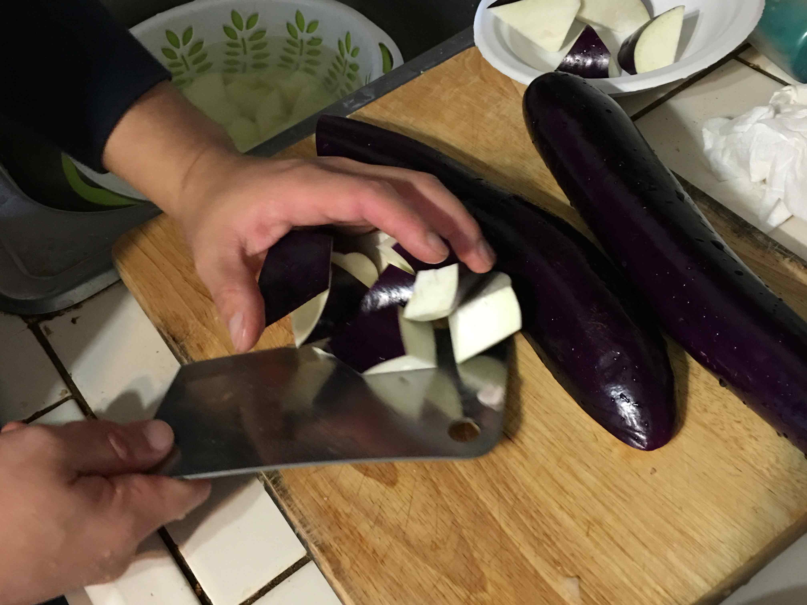

GGriskin, sugar, water, vinegar, carrots, starch, salt and abottle of tomato ketchup
Wash the meat and cut it to slice. Peel the carrots and cut them into shreds.
Mix the water with starch.
Pour the oil in the pan. Wait until half done and dip the meat in the starch. Then fry the meat until they turn rough. Take it out to keep the oil away.
Heat the oil to 180 Celsius, pour the meat again and keep stiring. Take them out of the oil until they turn golden.
Split most of the oil. Only use a little to fry with the carrots. Mix 2 teaspoons of ketchup, and some vinegar, sugar, salt together.
Put the meat on the pot and stir it well and then put the sauce on it.
Di San Xian(Potato, Eggplant & Pepper Stir Fry) Recipe

500 grams of potato, 125 grams of eggplant, 50 grams bell peppers
Firstly, start with the potatoes, keep the knife straight at roughly a 45 degree bias, then slice down. Then just twist and work around the potato to get roughly 3 inches by 1.5 inch pieces.
Put all potatoes in a big bowl, and fill it with water, so the starch on the surface of potatoes will be off.
And then, the eggplant. Peel the thinner skin of the eggplant, slice it as same deal as the potatoes.
Cut the pepper
Heat up the oil to 120 Celcius, put all potatoes on stove until cook through completely. Then strain out once the oil's back to about 180 Celcius, or about two minutes on our stove. Then strain out any excess oil, and toss on a paper towel lined plate.
After 5 minutes, put all potatoes, peppers and eggplants on the stove, and then cook it together.
Mix the corn starch with water for later. Heat up the milk and sugar. Turn heat off when sugar is melted.
Add in the corn starch water mix. Stir well. Use low heat, stir regularly to prevent lumps forming. When the mixture has thickened, lower the heat, keep stirring. Cook thoroughly into this texture. Then pour into the mold. And then flatten the surface. Cover with lid or cling film. And then put it in the fridge for 5 hours.
Mix Flour, corn starch, baking powder and salt together. Slowly pour in iced water to achieve a smooth texture. And then slowly pour in oil to make the batter crunchier. The oil must be completely mixed into the batter to achieve this consistency. After that, put this batter in the fridge for 10 minutes.
Cut the milk pudding into equal dices for cooking. And then heat up the oil, the oil must cover the dices, fry at 160 Celsius. After that, dip the milk pudding into the batter, slowly place into the pot. Fry until the batter hardens before stirring. Take them out when they turn light yellow in colour. We need to fry them again to make the batter crunchier.
Rest for 2 min. Heat uo the oil to 180 Celsius. Prepare some paper towel on a plate. Put all the pieces into the pot, fry for 20 seconds. Take them out and place them on the paper towel. Then turn heat off.